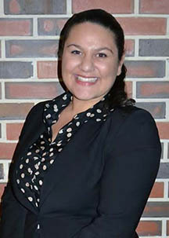

Welcome To My Page!
I am a Florida Gator and loving it.
My name is Sarah Lawrence, currently completing my second year at the University of Florida while pursuing a Bachelor's Degree in Business Administration with a specialization in Marketing, in addition to completing minors in both Entrepreneurship and Real Estate.
I am a well-rounded individual with an entrpreneurial spirit, seeking innovation and recognizing new opportunities throughout any position or task I am given. I enjoy taking a hands-on approach to my work and actively interacting with individuals I work with to give feedback to one another amd improving the overall goal.
Throughout my time at UF, I hope to develop valuable professional skills that will help me transition into Corporate America. Throughout my career, I hope to have my own business and manage its growth and expansion.
During my downtime, I enjoy cooking, baking and entertaining for my close friends and family. I am a dog lover, and a florida girl at heart.